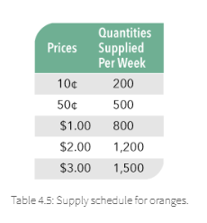
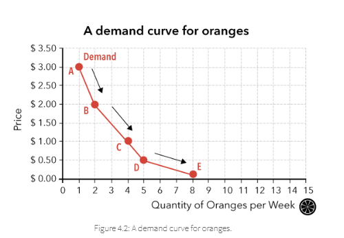
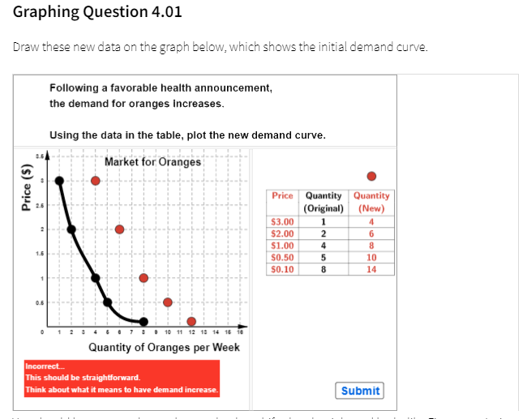
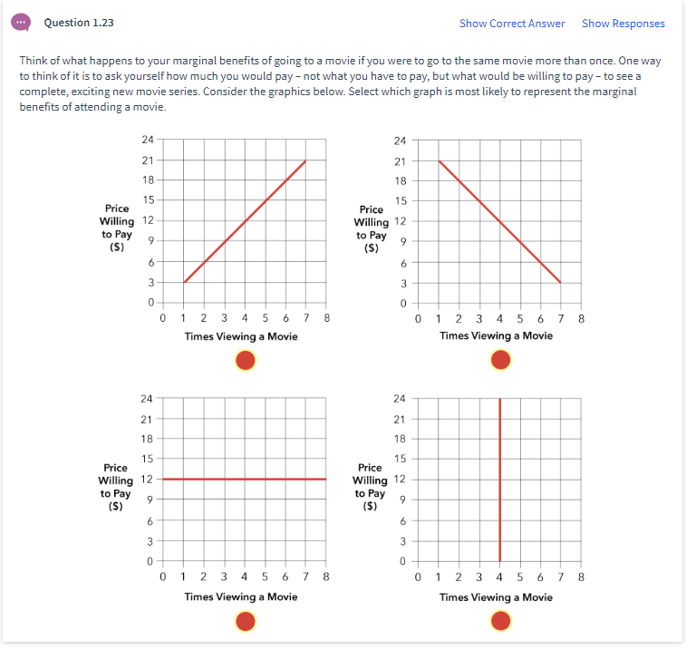
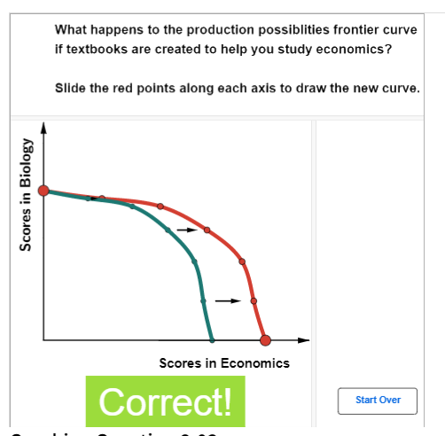
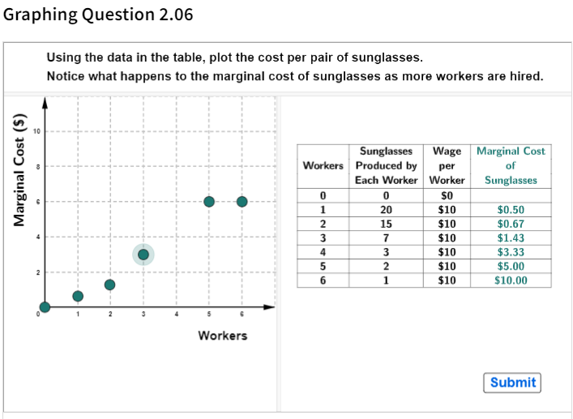

Gb buckles
Geogebra in the Buckles book
Counting tables, graphs and other elements in Buckles
The book has 29 chapters or modules. Each module has a long Chapter Reading Assignment (TH Page), Slides, a homework assignment (also in a TH page), and solutions to ungraded questions from the reading (another TH page). Embedded in each of these pages we find Tables, Static Graphs, Live Geogebra Activities, and Questions which may graded or ungraded. There are also questions in between slides.
In the section below entitled Types of elements in the book I include snapshots to give a sense of what the elements look like.
To get a sense of how much production material is involved in each chapter, I took inventory of Chapter 4.
Elements in Chapter 4
-
Tables: 13
-
Static Graphs: 16
-
Questions: 56
-
Live GB Graphing Questions: 10 (not graded but do show right/wrong)
-
open answer: about 25
-
multiple choice: about 20
-
A Glossary
Types of elements in the book
Tables

Static Graphs

Live Geogebra Activities
Students click on these and though they are not graded by the system they are coded to show right and wrong answers and provide hints.

Question Types
Multiple Choice

Short Answer
Not autograded, but hints and answers are provided.

Intro
From Buckles 1


